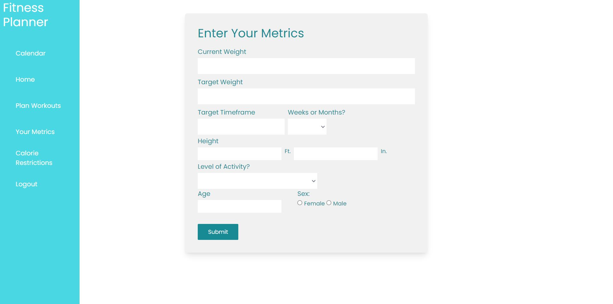
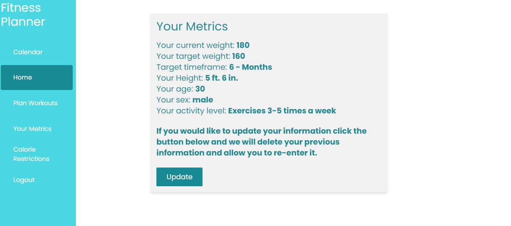
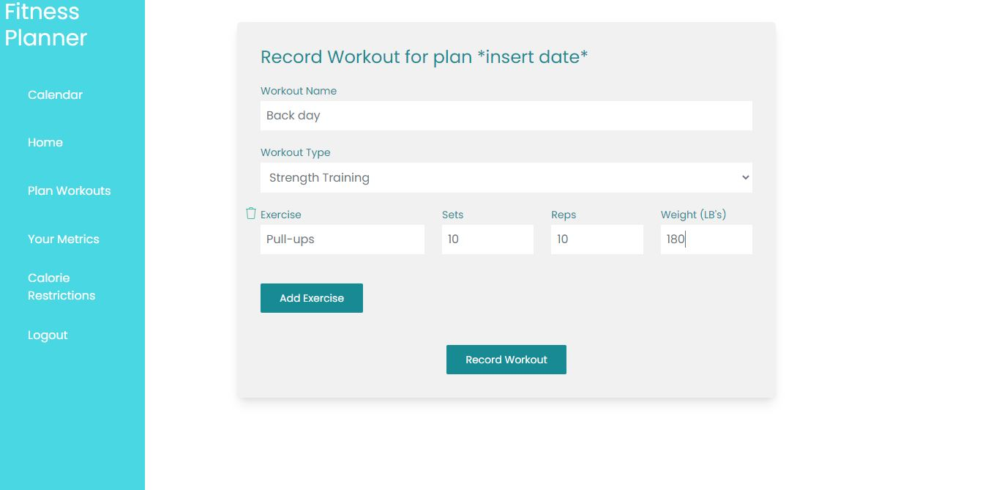
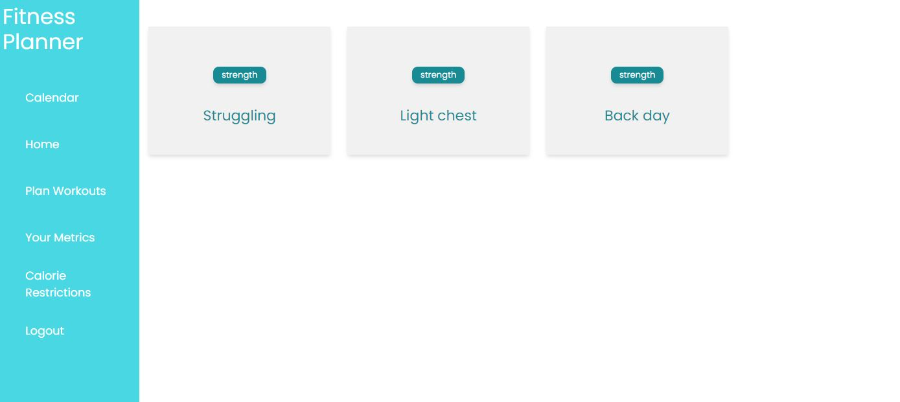

CSC-492-Project
Problem: It can be difficult to plan and accurately track your fitness goals
Core Tasks
- Task 1 - The app allows the user to enter factors like weight, age and height and generates a rough estimate of what their caloric intake should be to lose weight. It will give them a rough amount of weight to lose weekly and what their caloric intakes should be to support that lose within the timeframe they want to lose it. These calculations use the Harris-Benedict equation to calculate baseline caloric needs.
- Task 2 - The system allows the user to enter in workout routines and saves those workouts to their profile
- Task 3 (unfinished) - The system should allow the user to create workout schedules on a calendar using the workout routines they’ve created previously.
Web App Deployment:
Fitness-Planner
Github Repo
Libraries and framework
- Vue - This is the front-end framework of our app, it is designed for single page applications.
- Supabase - Database management tool we used, based on postgreSQL.
- Tailwindcss - Used to help style our app.
Key Screenshots
User Metric Entry - (for caloric Calculations)

User Metric When Filled

Caloric Restrictions - (using information from Welcome page)

Workout Entry

Planned_Workouts
Original intention was for these to be by date but are just on the home screen.

Individual Reflections (Evan):
- Contributions - Database management/policies, User Metric entry, User metric display, Calorie_Restrictions navigation side bar, basic setup (login/register) and edited workouts entry/view workouts.
- I've never worked with a web app framework like Vue or a database management tool like Supabase. A major plus from this project is I feel like I can put any basic web app ideas I have to "paper" after learning some of the basic technologies behind web development.
- Learning to use git at a basic level was pretty difficult at first. I'm pretty comfortable with it now though and finally understand how uesful it can be.
- I had a strange amount of trouble understanding the basic SQL I needed to know in order to write database policies.
- While Vue seems fairly intuitive to me now, I'd say a good 50 percent of my time on this project was spent just thinking of ways to do the basic tasks this project required through Vue.
- There are 2 strange bugs I still can't figure out. Firstly, any time the web app deployment(not localhost) reloads, the app crashes. The second bug is even stranger, values for caloric restrictions and caloric deficit are flipped on deployment.
- Contributions - Defined tech stack used for the project (Node, Vue, Supabase). Responsible for Calendar implementation (V-Calendar) and Workout page initial setup.
- Finding a good starting point was hard given there is a lot of options for frameworks and DBs
- Compatibility issues - We are using Vue 3.0 and many of the libraries I spend a lot of time researching and trying to implement ended up not working with 3.0. So there was a lot of work/time that was thrown out because of this
- I now have a better understanding of how to incorporate libraries into the vue framework
- This was the first time using Vue, so learning how it worked was useful.
Useful Skills Learned:
Difficulties
Individual Reflections (Alex):
Difficulties:
Useful Skills Learned: